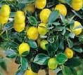
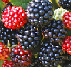
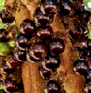
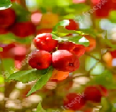

Incrível para casas e apartamentos:

Limoeiro Siciliano (Citrus Limon)
O limão siciliano é uma das melhores opções de limões para plantio em vasos ou canteiros pequenos. Escolha um local que receba pelo menos 4 horas de sol para plantá-lo.

Amoreira (Morus Insignis)
A amoreira é uma das espécies frutíferas mais fácies de plantar e cultivar. Além do mais, ela também oferece frutos em pouco tempo.

Jabuticabeira (Myrciaria Cauliflora)
A jabuticabeira é outra opção para quem deseja cultivar frutíferas em espaços pequenos. A dica aqui é manter o solo sempre úmido, mas bem drenado.

Aceroleira (Malpighia Glabra)
Riquíssima em vitamina C, a acerola é uma das frutinhas mais saborosas que você pode ter na sua casa.
